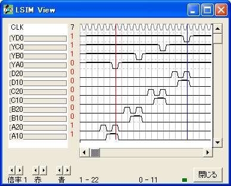
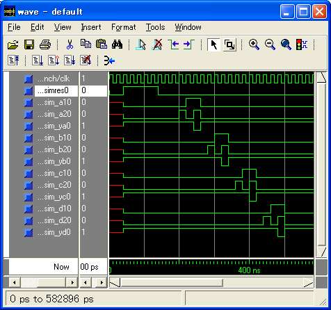

<!DOCTYPE HTML PUBLIC "-//W3C//DTD HTML 4.01 Transitional//EN" "http://www.w3.org/TR/html4/loose.dtd">
<html lang="ja">
<head>
<meta charset="UTF-8">
    <LINK Type="text/css" Rel="stylesheet" Href="main.css">
	<title></title>
</head>
<body>


<!-- ======================================== -->

<table bgcolor="white" cellpadding="20" align="center"><tr><td>

<a name="atama">&nbsp</a>
<TABLE border=0 width="100%" bgColor=#dedd80 align=center><!-- ************************************************************************************* -->
  <TBODY>
  <TR bgColor=#fff5e3>
    <TD colSpan=2><BR>
      <CENTER><FONT color=#bb7700 size=7>L言語</FONT> </CENTER><BR></TD></TR><!-- ************************************************************************************* -->
  <TR bgColor=lightgreen>
    <TD colSpan=2>
      <TABLE border=0>
        <TBODY>
        <TR>
          <TD colSpan=2><A 
            href="index1g.htm"></A></TD>
          <TD colSpan=2><A 
            href="LHDLMAN.htm"></A></TD>
          <TD colSpan=2></TD>
          <TD colSpan=2><A 
            href="LHDLMANh.htm"></A></TD>
          <TD colSpan=2><A 
            href="LHDLMANj.htm"></A></TD>
          <TD><A 
            href="LHDLMANk.htm"></A></TD>
          <TD><A 
            href="LHDLMANt.htm"></A></TD>
          <TD><A 
            href="LHDLMANu.htm"></A></TD>
          <TD><A 
            href="LHDLMANv.htm"></A></TD></TR></TBODY></TABLE></TD></TR><!-- ************************************************************************************* -->
  <TR bgColor=#fff5e3>
    <TD vAlign=top width=200><BR>&nbsp;&nbsp;&nbsp;&nbsp;&nbsp;&nbsp;&nbsp; 
      <FONT color=gray><B>目次</B></FONT> <BR><BR>&nbsp;<FONT 
      color=green>●</FONT><A 
      href="LHDLMANg.htm#seltukeihouhou">設計方法</A><BR>&nbsp;<FONT 
      color=green>◎</FONT><A 
      href="LHDLMANg.htm#jiltusai">実際</A><BR>&nbsp;<FONT 
      color=green>○</FONT><A 
      href="LHDLMANg.htm#jiltukoufu">実効譜</A><BR>&nbsp;<FONT 
      color=green>○</FONT><A 
      href="LHDLMANg.htm#kinoujiltukoufu">機能実行譜</A><BR>&nbsp;<FONT 
      color=green>○</FONT><A 
      href="LHDLMANg.htm#simuration">シミュレーション</A><BR>&nbsp;<FONT 
      color=green>○</FONT><A 
      href="LHDLMANg.htm#kensyou">検証</A><BR>&nbsp;<FONT 
      color=green>○</FONT><A 
      href="LHDLMANg.htm#tiltupukaihatsukannkyoudenokensyou">チップ開発環境での検証</A><BR>&nbsp;<FONT 
      color=green>○</FONT><A 
      href="LHDLMANg.htm#tiltupuka">チップ化</A><BR></TD><!-- ************************************************************************************* -->
    <TD><!-- ================================================================= --><!--                                                                   --><!-- ================================================================= --><A 
      name=seltukeihouhou>&nbsp;</A> <BR>
      <HR class=i color=#4f9177 SIZE=20>
      <FONT class=i color=#4f9177>設計方法</FONT> 
      <HR class=i color=#4f9177>

      <P class=i>1. エディッタでL言語の論理譜の作成<BR>2. LDCで論理式に翻訳<BR>3. 
      LSIMで論理式から検証結果を作成<BR>4. LSIM VIEWで結果を閲覧<BR><BR>望みの機能が得られるまで 
      1.〜4.を繰り返します。<BR>望みの機能が得られたら、LDCの選択機能で出力論理式を<BR><BR>1. ABEL<BR>2. 
      AHDL<BR>3. Verilog HDL<BR>4. 
      VHDL<BR><BR>から選んで出力します。<BR>チップ化する場合には上記で出力したものをPLDメーカの提供する開発ツールでチップデータにしてチップ化して下さい。 
      </P><A 
      href="LHDLMANg.htm#atama"></A> <!-- ================================================================= --><!--                                                                   --><!-- ================================================================= --><A 
      name=jiltusai>&nbsp;</A> <BR>
      <HR class=i color=#4f9177 SIZE=10>
      <FONT class=i color=#4f9177>実際</FONT> 
      <HR class=i color=#4f9177>

      <P class=i>L言語で設計してVHDLでメーカの開発環境に渡してチップ化するデータを作るまでを順を追って説明します。 <BR>
      <P class=i>74シリーズの00を名前をTTL00として作ってみます。<BR></P>
      <P class=i></P>
      <TABLE border=1 bgColor=white>
        <TBODY>
        <TR>
          <TD><PRE>logicname TTL00

endlogic
</PRE></TD></TR></TBODY></TABLE>
      <P></P>
      <P class=i>上が名前だけをつけた最上位の枠になります。<BR><BR></P><A 
      href="LHDLMANg.htm#atama"></A> <!-- ================================================================= --><!--                                                                   --><!-- ================================================================= --><A 
      name=jiltukoufu>&nbsp;</A> <BR>
      <HR class=i color=lightgreen SIZE=10>
      <FONT class=i color=green>実効譜</FONT> 
      <HR class=i color=lightgreen>

      <P class=i>これにICという名前で実効譜の枠を作ります。<BR></P>
      <P class=i></P>
      <TABLE border=1 bgColor=white>
        <TBODY>
        <TR>
          <TD><PRE>logicname TTL00

enyity IC   {<FONT color=red>← ICという名前の実効譜のはじまり。</FONT>}

ende   {<FONT color=red>← ICという名前の実効譜の終わり</FONT>}

endlogic
</PRE></TD></TR></TBODY></TABLE>
      <P></P>
      <P 
      class=i>上のICという名前の実効譜の枠の中に7400の論理を作っていきます。<BR><BR>7400には2入力の否定論理積が4個はいっています、それぞれの入力を 
      A1,A2, B1,B2, C1,C2, D1,D2 とします。<BR></P>
      <P class=i></P>
      <TABLE border=1 bgColor=white>
        <TBODY>
        <TR>
          <TD><PRE>logicname TTL00

entity IC
input  A1,A2;   {<FONT color=red>1番目の否定論理積の入力</FONT>}
input  B1,B2;   {<FONT color=red>2番目の否定論理積の入力</FONT>}
input  C1,C2;   {<FONT color=red>3番目の否定論理積の入力</FONT>}
input  D1,D2;   {<FONT color=red>4番目の否定論理積の入力</FONT>}

ende

endlogic
</PRE></TD></TR></TBODY></TABLE>
      <P></P>
      <P class=i>7400の4個の否定論理積の出力をYA,YB,YC,YDとします。<BR></P>
      <P class=i></P>
      <TABLE border=1 bgColor=white>
        <TBODY>
        <TR>
          <TD><PRE>logicname TTL00

entity IC
input  A1,A2;
input  B1,B2;
input  C1,C2;
input  D1,D2;
output YA,YB,YC,YD; {<FONT color=red>4個の否定論理積の出力</FONT>}

ende

endlogic
</PRE></TD></TR></TBODY></TABLE>
      <P></P>
      <P class=i>1個の否定論理積を作ります。<BR></P>
      <P class=i></P>
      <TABLE border=1 bgColor=white>
        <TBODY>
        <TR>
          <TD><PRE>logicname TTL00

entity IC
input  A1,A2;
input  B1,B2;
input  C1,C2;
input  D1,D2;
output YA,YB,YC,YD;

   if (A1 &amp; A2) {<FONT color=red>条件付けの始まりと条件を示します。</FONT>}
      YA=0;     {<FONT color=red>条件が真(1)のとき有効になります。</FONT>}
   else         {<FONT color=red>偽の式が続くことを示します。</FONT>}
      YA=1;     {<FONT color=red>条件が偽(0)のとき有効になります。</FONT>}
   endif        {<FONT color=red>条件の終わりを示します。</FONT>}
ende

endlogic
</PRE></TD></TR></TBODY></TABLE>
      <P></P>
      <P class=i>同様に4個作ります。<BR></P>
      <P class=i></P>
      <TABLE border=1 bgColor=white>
        <TBODY>
        <TR>
          <TD><PRE>logicname TTL00

entity IC
input  A1,A2;
input  B1,B2;
input  C1,C2;
input  D1,D2;
output YA,YB,YC,YD;

   if (A1 &amp; A2) YA=0; else YA=1; endif   {<FONT color=red>1番目の否定論理積</FONT>}
   if (B1 &amp; B2) YB=0; else YB=1; endif   {<FONT color=red>2番目</FONT>}
   if (C1 &amp; C2) YC=0; else YC=1; endif   {<FONT color=red>3番目</FONT>}
   if (D1 &amp; D2) YD=0; else YD=1; endif   {<FONT color=red>4番目</FONT>}
ende

endlogic
</PRE></TD></TR></TBODY></TABLE>
      <P></P>
      <P 
      class=i>これで論理譜は一応の完成ができました。<BR><BR>これをSAMPL.Lのファイルの保存して。<BR><BR>コマンドプロンプトで　<B>LDC 
      SAMPLE -vh</B>　を実行します。<BR><BR>-vhはVHDLのファイルを得るためのオプションです。<BR></P>
      <P class=i></P>
      <TABLE border=1 bgColor=silver>
        <TBODY>
        <TR>
          <TD><PRE>library IEEE;

use IEEE.std_logic_1164.all;

entity IC is

   port(A10                                 : in    std_logic;
        A20                                 : in    std_logic;
        YA0                                 : out   std_logic;
        B10                                 : in    std_logic;
        B20                                 : in    std_logic;
        YB0                                 : out   std_logic;
        C10                                 : in    std_logic;
        C20                                 : in    std_logic;
        YC0                                 : out   std_logic;
        D10                                 : in    std_logic;
        D20                                 : in    std_logic;
        YD0                                 : out   std_logic);

end IC;

architecture RTL of IC is
signal n_n16                               : std_logic ;
signal n_n21                               : std_logic ;
signal n_n26                               : std_logic ;
signal n_n31                               : std_logic ;

begin

n_n16 &lt;= (A10 and A20) ;

YA0 &lt;= (not n_n16) ;

n_n21 &lt;= (B10 and B20) ;

YB0 &lt;= (not n_n21) ;

n_n26 &lt;= (C10 and C20) ;

YC0 &lt;= (not n_n26) ;

n_n31 &lt;= (D10 and D20) ;

YD0 &lt;= (not n_n31) ;

end RTL;
</PRE></TD></TR></TBODY></TABLE>
      <P></P>
      <P 
      class=i>上のVHDLのファイルが　<B>e0.vhd</B>　に得られます。<BR>このファイルを使ってチップ化を行ってください。<BR>e0.vhd　の　e0　は1番目の枠がファイル化されるときの番号で、2番目の枠の場合は　e1　になります。 
      <BR>枠は実効譜と機能実行譜です、手続き譜は含まれません。<BR></P><A 
      href="LHDLMANg.htm#atama"></A> <!-- ================================================================= --><!--                                                                   --><!-- ================================================================= --><A 
      name=kinoujiltukoufu>&nbsp;</A> <BR>
      <HR class=i color=lightgreen SIZE=10>
      <FONT class=i color=green>機能実行譜</FONT> 
      <HR class=i color=lightgreen>

      <P class=i>実効譜　IC　を検証するために機能実行譜を作ります。<BR>機能実行譜の名前は　sim　と決まっています。<BR></P>
      <P class=i></P>
      <TABLE border=1 bgColor=white>
        <TBODY>
        <TR>
          <TD><PRE>logicname TTL00

entity IC
input  A1,A2;
input  B1,B2;
input  C1,C2;
input  D1,D2;
output YA,YB,YC,YD;

   if (A1 &amp; A2) YA=0; else YA=1; endif
   if (B1 &amp; B2) YB=0; else YB=1; endif
   if (C1 &amp; C2) YC=0; else YC=1; endif
   if (D1 &amp; D2) YD=0; else YD=1; endif
ende

entity sim   {<FONT color=red>← 機能実行譜のはじまり。</FONT>}

ende   {<FONT color=red>← 機能実行譜のおわり。</FONT>}

endlogic
</PRE></TD></TR></TBODY></TABLE>
      <P></P>
      <P class=i>上の機能実行譜で実効譜　IC　を検証するには、実効譜ICを導入します。<BR></P>
      <P class=i></P>
      <TABLE border=1 bgColor=white>
        <TBODY>
        <TR>
          <TD><PRE>logicname TTL00

entity IC
input  A1,A2;
input  B1,B2;
input  C1,C2;
input  D1,D2;
output YA,YB,YC,YD;

   if (A1 &amp; A2) YA=0; else YA=1; endif
   if (B1 &amp; B2) YB=0; else YB=1; endif
   if (C1 &amp; C2) YC=0; else YC=1; endif
   if (D1 &amp; D2) YD=0; else YD=1; endif
ende

entity sim

   part IC(A1,A2,B1,B2,C1,C2,D1,D2,YA,YB,YC,YD)   {<FONT color=red>実効譜ICの導入</FONT>}

ende

endlogic
</PRE></TD></TR></TBODY></TABLE>
      <P></P>
      <P class=i>実効譜ICを導入するには、上の様に <B>part</B> 
      を使って実効譜の名前の　<B>IC</B>　を指定して導入します。<BR><B>( )</B> 
      の中には信号を書かれた順番に引用していきます。<BR>信号を引用するときの名前は機能実行譜の中で割り当てた信号なので自由に付けることができます、引用先と同じ名前を使用してもかまいません。<BR></P>
      <P class=i></P>
      <TABLE border=1 bgColor=white>
        <TBODY>
        <TR>
          <TD><PRE>logicname TTL00

entity IC
input  A1,A2;
input  B1,B2;
input  C1,C2;
input  D1,D2;
output YA,YB,YC,YD;

   if (A1 &amp; A2) YA=0; else YA=1; endif
   if (B1 &amp; B2) YB=0; else YB=1; endif
   if (C1 &amp; C2) YC=0; else YC=1; endif
   if (D1 &amp; D2) YD=0; else YD=1; endif
ende

entity sim
output A1,A2;      {<FONT color=red>引用する信号の割り当て。</FONT>}
output B1,B2;      {<FONT color=red>〃</FONT>}
output C1,C2;      {<FONT color=red>〃</FONT>}
output D1,D2;      {<FONT color=red>〃</FONT>}
output YA,YB,YC,YD;{<FONT color=red>〃</FONT>}

   part IC(A1,A2,B1,B2,C1,C2,D1,D2,YA,YB,YC,YD)

ende

endlogic
</PRE></TD></TR></TBODY></TABLE>
      <P></P>
      <P 
      class=i>これで上の機能実行譜が実効譜ICを検証できるようになりました。<BR>機能実効譜は完結して閉じた論理なので割り当てる信号はすべて出力信号になります。 
      <BR>検証の方法を決めます、否定論理積は2入力なので4種類の入力値を与えます。<BR>4個の否定論理積には時刻をずらして、それらを与えることにします。<BR>時刻を作るために5桁の信号tcを割り当てて32ステップまでの検証を行えるようにします。<BR></P>
      <P class=i></P>
      <TABLE border=1 bgColor=white>
        <TBODY>
        <TR>
          <TD><PRE>logicname TTL00

entity IC
input  A1,A2;
input  B1,B2;
input  C1,C2;
input  D1,D2;
output YA,YB,YC,YD;

   if (A1 &amp; A2) YA=0; else YA=1; endif
   if (B1 &amp; B2) YB=0; else YB=1; endif
   if (C1 &amp; C2) YC=0; else YC=1; endif
   if (D1 &amp; D2) YD=0; else YD=1; endif
ende

entity sim
output A1,A2;
output B1,B2;
output C1,C2;
output D1,D2;
output YA,YB,YC,YD;
bitr   tc[5];   {<FONT color=red>時刻を作るために5桁の信号tcを割り当てます。</FONT>}

   part IC(A1,A2,B1,B2,C1,C2,D1,D2,YA,YB,YC,YD)

ende

endlogic
</PRE></TD></TR></TBODY></TABLE>
      <P></P>
      <P class=i>実効譜ICを検証するための論理を付け加えます。<BR></P>
      <P class=i></P>
      <TABLE border=1 bgColor=white>
        <TBODY>
        <TR>
          <TD><PRE>logicname TTL00

entity IC
input  A1,A2;
input  B1,B2;
input  C1,C2;
input  D1,D2;
output YA,YB,YC,YD;

   if (A1 &amp; A2) YA=0; else YA=1; endif
   if (B1 &amp; B2) YB=0; else YB=1; endif
   if (C1 &amp; C2) YC=0; else YC=1; endif
   if (D1 &amp; D2) YD=0; else YD=1; endif
ende

entity sim
output A1,A2;
output B1,B2;
output C1,C2;
output D1,D2;
output YA,YB,YC,YD;
bitr   tc[5];

   part IC(A1,A2,B1,B2,C1,C2,D1,D2,YA,YB,YC,YD)

   tc=tc+1;   {<FONT color=red>時刻を進める計数。</FONT>}

   switch(tc)   {<FONT color=red>否定論理積4個分の入力値設定</FONT>}
      case 3:  A1=0; A2=0;
      case 4:  A1=0; A2=1;
      case 5:  A1=1; A2=0;
      case 6:  A1=1; A2=1;

      case 7:  B1=0; B2=0;
      case 8:  B1=0; B2=1;
      case 9:  B1=1; B2=0;
      case 10: B1=1; B2=1;

      case 11: C1=0; C2=0;
      case 12: C1=0; C2=1;
      case 13: C1=1; C2=0;
      case 14: C1=1; C2=1;

      case 15: D1=0; D2=0;
      case 16: D1=0; D2=1;
      case 17: D1=1; D2=0;
      case 18: D1=1; D2=1;
   endswitch

ende

endlogic
</PRE></TD></TR></TBODY></TABLE>
      <P></P>
      <P class=i>これで実効譜と機能実行譜のそろった論理譜が完成できました。<BR><BR>コマンドプロンプトで　<B>LDC SAMPLE 
      -ls 
      -lbl</B>　を実行します。<BR><BR><B>-ls</B>　はLSIMのファイルを得るためのオプションです。<BR><B>-lbl</B>　はVIEWの閲覧時の信号表を得るためのオプションです。<BR><BR>t1.sim　と　lsim.lbl　が得られます。<BR>実行譜ICの機能実行譜のファイルが　t1.sim　になるのは2番目の枠だからです。<BR>機能実行譜はいくつでも置くことができます、それらのファイルは　t　に枠の順番が振り付けられたものになります。 
      </P><A 
      href="LHDLMANg.htm#atama"></A> <!-- ================================================================= --><!--                                                                   --><!-- ================================================================= --><A 
      name=simuration>&nbsp;</A> <BR>
      <HR class=i color=lightgreen SIZE=10>
      <FONT class=i color=green>シミュレーション</FONT> 
      <HR class=i color=lightgreen>

      <P 
      class=i>t1.sim　を使って検証を行うデータをシミュレータ　<B>SIM</B>　を使って作ります。<BR>コマンドプロンプトで　<B>SIM 
      t1.sim</B>　を実行します。<BR></P>
      <P class=i></P>
      <TABLE border=1 bgColor=lightblue>
        <TBODY>
        <TR>
          <TD><PRE>1-信号解析終了

2-論理式解析終了

3-メモリ取得終了

4-ヒューズマップ作成終了

5-深度解析終了 [3]
6-実行順序割付終了

7-実行マップ作成終了

----------------
信号数     18
論理和数   16
論理容量   1
記憶信号   0
非記憶信号 16
入力信号   2
論理参照   20
メモリ確保 2 KB
論理式     1 KB
ステップ   100
====== End =====
simulation -&gt; end
</PRE></TD></TR></TBODY></TABLE>
      <P></P>
      <P 
      class=i>上の画面になればシミュレーションは正常に終了しています。<BR>100ステップのデータが　LSIM.OUT　に出来上がっています。<BR>100以上のステップが必要な場合はファイル名の後にステップ数を付けると、そのステップ数でシミュレーションが行われます。<BR></P><A 
      href="LHDLMANg.htm#atama"></A> <!-- ================================================================= --><!--                                                                   --><!-- ================================================================= --><A 
      name=kensyou>&nbsp;</A> <BR>
      <HR class=i color=lightgreen SIZE=10>
      <FONT class=i color=green>検証</FONT> 
      <HR class=i color=lightgreen>

      <P class=i>検証はシミュレーションデータ　LSIM.OUT　を信号表　LSIM.LBL　で　VIEW　を使って閲覧して行います。 
      <BR>LSIM.OUT　のあるディレクトリでコマンドプロンプトを開いて　<B>VIEW</B>　を実行します。<BR></P> 
      <P 
      class=i>上の画面が開くので、検証したい位置の値を確認します。<BR>ここで値が期待値でなければ、設計の修正が必要な場合なら実効譜を直します。<BR>さらに論理の確認を増やして値を見たい場合は機能実行譜に書き加えます、そして<BR>　<B>「コンパイル 
      → シミュレーション → 検証」</B>　<BR>を期待値が得られて論理設計が完成するまで繰り返し行います。 </P><A 
      href="LHDLMANg.htm#atama"></A> <!-- ================================================================= --><!--                                                                   --><!-- ================================================================= --><A 
      name=tiltupukaihatsukannkyoudenokensyou>&nbsp;</A> <BR>
      <HR class=i color=lightgreen SIZE=10>
      <FONT class=i color=green>チップ開発環境での検証</FONT> 
      <HR class=i color=lightgreen>

      <P 
      class=i>機能実行譜があるときに　LDC　を　-vh　オプションを付けて実行すると機能実行譜は　e1.vhd　のファイルになります、また、そのテストベンチが　s1.vhd　に出力されています。<BR><BR>e1.vhd　は設計論理と検証論理が合体したものです。<BR>s1.vhd　は、その閉じた論理を初期化してクロックを与えています。<BR></P>
      <TABLE class=i border=1 bgColor=white>
        <TBODY>
        <TR>
          <TD><PRE>logicname TTL00

entity IC
input  A1,A2;
input  B1,B2;
input  C1,C2;
input  D1,D2;
output YA,YB,YC,YD;

   if (A1 &amp; A2) YA=0; else YA=1; endif
   if (B1 &amp; B2) YB=0; else YB=1; endif
   if (C1 &amp; C2) YC=0; else YC=1; endif
   if (D1 &amp; D2) YD=0; else YD=1; endif
ende

entity sim
output A1,A2;
output B1,B2;
output C1,C2;
output D1,D2;
output YA,YB,YC,YD;
bitr   tc[5];
input  simres;   {<FONT color=red>機能実行を初期化する信号</FONT>}

   part IC(A1,A2,B1,B2,C1,C2,D1,D2,YA,YB,YC,YD)

   if (!simres) tc=tc+1; endif   {<FONT color=red>シミュレーション開始時に初期化されます。</FONT>}

   switch(tc)
      case 3:  A1=0; A2=0;
      case 4:  A1=0; A2=1;
      case 5:  A1=1; A2=0;
      case 6:  A1=1; A2=1;

      case 7:  B1=0; B2=0;
      case 8:  B1=0; B2=1;
      case 9:  B1=1; B2=0;
      case 10: B1=1; B2=1;

      case 11: C1=0; C2=0;
      case 12: C1=0; C2=1;
      case 13: C1=1; C2=0;
      case 14: C1=1; C2=1;

      case 15: D1=0; D2=0;
      case 16: D1=0; D2=1;
      case 17: D1=1; D2=0;
      case 18: D1=1; D2=1;
   endswitch

ende

endlogic
</PRE></TD></TR></TBODY></TABLE>
      <P class=i>コマンドプロンプトで　<B>LDC SAMPLE -vh</B>　を実行します。<BR>上の論理譜をコンパイルして得られる 
      e1.vhd に s1.vhd 
      をテストベンチにしてシミュレーションします。<BR><BR>これで得られるテストベンチのステップ数は30になっています。<BR>例えばステップ数を500にしたいときは 
      <B>-sp 500</B> のオプションを付け加えます。<BR>エディタでテストベンチを直接編集して変更しても問題ありません。<BR></P>
      <TABLE class=i bgColor=#ffccff>
        <TBODY>
        <TR>
          <TD>機能実行譜を LSIM 
            でシミュレーションするときは信号の初期値はすべて0として始まります。<BR>記憶信号も初期化の論理がなくてもいつも0を初期値として始められます。<BR>他のシミュレータでは初期値が不定になるときはシミュレーションが進まないものがあります。 
            <BR>機能実行譜では唯一の例外として　<B>simres</B>　を入力に指定することができます。 <BR>simres 
            はテストベンチでシミュレーション開始のときに5クロックだけ1になります。<BR>記憶信号は simres 
            を使って初期値を与えます。<BR><BR>LSIMとは共有できない信号なので、LSIMを使うときは simres=0 
            にして効かないようにします。<BR></TD></TR></TBODY></TABLE>
      <P class=i>e1.vhd に s1.vhd をテストベンチにして ModelSimでシミュレーションした結果です。<BR></P> <BR><A 
      href="LHDLMANg.htm#atama"></A> <!-- ================================================================= --><!--                                                                   --><!-- ================================================================= --><A 
      name=tiltupuka>&nbsp;</A> <BR>
      <HR class=i color=lightgreen SIZE=10>
      <FONT class=i color=green>チップ化</FONT> 
      <HR class=i color=lightgreen>

      <P class=i>これまでの行程を経て論理設計が完了すると、次のステップのチップ化に移ります。<BR>チップ化には e0.vhd 
      を使います、下は、その一例です。<BR></P>
      <TABLE class=i border=1 bgColor=silver>
        <TBODY>
        <TR>
          <TD><PRE> 
cpldfit:  version G.26                              Xilinx Inc.
                                  Fitter Report
Design Name: ic                                  Date:  8-20-2004,  7:21PM
Device Used: XC9536-5-PC44
Fitting Status: Successful

****************************  Resource Summary  ****************************

Macrocells     Product Terms    Registers      Pins           Function Block 
Used           Used             Used           Used           Inputs Used    
4  /36  ( 11%) 4   /180  (  2%) 0  /36  (  0%) 12 /34  ( 35%) 8  /72  ( 11%)

PIN RESOURCES:

Signal Type    Required     Mapped  |  Pin Type            Used   Remaining 
------------------------------------|---------------------------------------
Input         :    8           8    |  I/O              :    12       16
Output        :    4           4    |  GCK/IO           :     0        3
Bidirectional :    0           0    |  GTS/IO           :     0        2
GCK           :    0           0    |  GSR/IO           :     0        1
GTS           :    0           0    |
GSR           :    0           0    |
                 ----        ----
        Total     12          12

MACROCELL RESOURCES:

Total Macrocells Available                    36
Registered Macrocells                          0
Non-registered Macrocell driving I/O           4

GLOBAL RESOURCES:

Global clock net(s) unused.
Global output enable net(s) unused.
Global set/reset net(s) unused.

POWER DATA:

There are 4 macrocells in high performance mode (MCHP).
There are 0 macrocells in low power mode (MCLP).
There are a total of 4 macrocells used (MC).

End of Resource Summary
*************** Summary of Required Resources ******************

** LOGIC **
Signal              Total   Signals Loc     Pwr  Slew Pin  Pin       Pin       Reg Init
Name                Pt      Used            Mode Rate #    Type      Use       State
YA0                 1       2       FB2_2   STD  FAST 44   I/O       O         
YB0                 1       2       FB2_11  STD  FAST 34   I/O       O         
YC0                 1       2       FB1_2   STD  FAST 3    I/O       O         
YD0                 1       2       FB1_11  STD  FAST 13   I/O       O         

** INPUTS **
Signal                              Loc               Pin  Pin       Pin
Name                                                  #    Type      Use
A10                                 FB1_10            12   I/O       I
A20                                 FB1_6             8    I/O       I
B10                                 FB2_7             38   I/O       I
B20                                 FB2_8             37   I/O       I
C10                                 FB1_9             11   I/O       I
C20                                 FB1_8             9    I/O       I
D10                                 FB2_10            35   I/O       I
D20                                 FB2_9             36   I/O       I

End of Resources

*********************Function Block Resource Summary***********************
Function    # of        FB Inputs   Signals     Total       O/IO      IO    
Block       Macrocells  Used        Used        Pt Used     Req       Avail 
FB1           2           4           4            2         2/0       17   
FB2           2           4           4            2         2/0       17   
            ----                                -----       -----     ----- 
              4                                    4         4/0       34   
*********************************** FB1 ***********************************
Number of function block inputs used/remaining:               4/32
Number of signals used by logic mapping into function block:  4
Signal              Total   Imp   Exp Unused  Loc     Pwr   Pin   Pin     Pin
Name                Pt      Pt    Pt  Pt              Mode   #    Type    Use
(unused)              0       0     0   5     FB1_1         2     I/O     
YC0                   1       0     0   4     FB1_2   STD   3     I/O     O
(unused)              0       0     0   5     FB1_3         5     GCK/I/O 
(unused)              0       0     0   5     FB1_4         4     I/O     
(unused)              0       0     0   5     FB1_5         6     GCK/I/O 
(unused)              0       0     0   5     FB1_6         8     I/O     I
(unused)              0       0     0   5     FB1_7         7     GCK/I/O 
(unused)              0       0     0   5     FB1_8         9     I/O     I
(unused)              0       0     0   5     FB1_9         11    I/O     I
(unused)              0       0     0   5     FB1_10        12    I/O     I
YD0                   1       0     0   4     FB1_11  STD   13    I/O     O
(unused)              0       0     0   5     FB1_12        14    I/O     
(unused)              0       0     0   5     FB1_13        18    I/O     
(unused)              0       0     0   5     FB1_14        19    I/O     
(unused)              0       0     0   5     FB1_15        20    I/O     
(unused)              0       0     0   5     FB1_16        22    I/O     
(unused)              0       0     0   5     FB1_17        24    I/O     
(unused)              0       0     0   5     FB1_18              (b)     

Signals Used by Logic in Function Block
  1: C10                3: D10                4: D20 
  2: C20              

Signal                        1         2         3         4 Signals FB
Name                0----+----0----+----0----+----0----+----0 Used    Inputs
YC0                  XX...................................... 2       2
YD0                  ..XX.................................... 2       2
                    0----+----1----+----2----+----3----+----4
                              0         0         0         0
Legend:
Total Pt     - Total product terms used by the macrocell signal
Imp Pt       - Product terms imported from other macrocells
Exp Pt       - Product terms exported to other macrocells
               in direction shown
Unused Pt    - Unused local product terms remaining in macrocell
Loc          - Location where logic was mapped in device
Pwr Mode     - Macrocell power mode
Pin Type/Use - I  - Input             GCK - Global Clock
               O  - Output            GTS - Global Output Enable
              (b) - Buried macrocell  GSR - Global Set/Reset
X(@) - Signal used as input (wire-AND input) to the macrocell logic.
    The number of Signals Used may exceed the number of FB Inputs Used due
    to wire-ANDing in the switch matrix.
*********************************** FB2 ***********************************
Number of function block inputs used/remaining:               4/32
Number of signals used by logic mapping into function block:  4
Signal              Total   Imp   Exp Unused  Loc     Pwr   Pin   Pin     Pin
Name                Pt      Pt    Pt  Pt              Mode   #    Type    Use
(unused)              0       0     0   5     FB2_1         1     I/O     
YA0                   1       0     0   4     FB2_2   STD   44    I/O     O
(unused)              0       0     0   5     FB2_3         42    GTS/I/O 
(unused)              0       0     0   5     FB2_4         43    I/O     
(unused)              0       0     0   5     FB2_5         40    GTS/I/O 
(unused)              0       0     0   5     FB2_6         39    GSR/I/O 
(unused)              0       0     0   5     FB2_7         38    I/O     I
(unused)              0       0     0   5     FB2_8         37    I/O     I
(unused)              0       0     0   5     FB2_9         36    I/O     I
(unused)              0       0     0   5     FB2_10        35    I/O     I
YB0                   1       0     0   4     FB2_11  STD   34    I/O     O
(unused)              0       0     0   5     FB2_12        33    I/O     
(unused)              0       0     0   5     FB2_13        29    I/O     
(unused)              0       0     0   5     FB2_14        28    I/O     
(unused)              0       0     0   5     FB2_15        27    I/O     
(unused)              0       0     0   5     FB2_16        26    I/O     
(unused)              0       0     0   5     FB2_17        25    I/O     
(unused)              0       0     0   5     FB2_18              (b)     

Signals Used by Logic in Function Block
  1: A10                3: B10                4: B20 
  2: A20              

Signal                        1         2         3         4 Signals FB
Name                0----+----0----+----0----+----0----+----0 Used    Inputs
YA0                  XX...................................... 2       2
YB0                  ..XX.................................... 2       2
                    0----+----1----+----2----+----3----+----4
                              0         0         0         0
Legend:
Total Pt     - Total product terms used by the macrocell signal
Imp Pt       - Product terms imported from other macrocells
Exp Pt       - Product terms exported to other macrocells
               in direction shown
Unused Pt    - Unused local product terms remaining in macrocell
Loc          - Location where logic was mapped in device
Pwr Mode     - Macrocell power mode
Pin Type/Use - I  - Input             GCK - Global Clock
               O  - Output            GTS - Global Output Enable
              (b) - Buried macrocell  GSR - Global Set/Reset
X(@) - Signal used as input (wire-AND input) to the macrocell logic.
    The number of Signals Used may exceed the number of FB Inputs Used due
    to wire-ANDing in the switch matrix.
;;-----------------------------------------------------------------;;
; Implemented Equations.

!YA0 = A20 &amp; A10;    

!YB0 = B20 &amp; B10;    

!YC0 = C20 &amp; C10;    

!YD0 = D20 &amp; D10;    


Legend:  <SIGNAME>.COMB = combinational node mapped to the same physical macrocell
                          as the FastInput "signal" (not logically related)
****************************  Device Pin Out ****************************

Device : XC9536-5-PC44


   --------------------------------  
  /6  5  4  3  2  1  44 43 42 41 40 \
 | 7                             39 | 
 | 8                             38 | 
 | 9                             37 | 
 | 10                            36 | 
 | 11         XC9536-5-PC44      35 | 
 | 12                            34 | 
 | 13                            33 | 
 | 14                            32 | 
 | 15                            31 | 
 | 16                            30 | 
 | 17                            29 | 
 \ 18 19 20 21 22 23 24 25 26 27 28 /
   --------------------------------  


Pin Signal                         Pin Signal                        
No. Name                           No. Name                          
  1 TIE                              23 GND                           
  2 TIE                              24 TIE                           
  3 YC0                              25 TIE                           
  4 TIE                              26 TIE                           
  5 TIE                              27 TIE                           
  6 TIE                              28 TIE                           
  7 TIE                              29 TIE                           
  8 A20                              30 TDO                           
  9 C20                              31 GND                           
 10 GND                              32 VCC                           
 11 C10                              33 TIE                           
 12 A10                              34 YB0                           
 13 YD0                              35 D10                           
 14 TIE                              36 D20                           
 15 TDI                              37 B20                           
 16 TMS                              38 B10                           
 17 TCK                              39 TIE                           
 18 TIE                              40 TIE                           
 19 TIE                              41 VCC                           
 20 TIE                              42 TIE                           
 21 VCC                              43 TIE                           
 22 TIE                              44 YA0                           


Legend :  NC  = Not Connected, unbonded pin
         PGND = Unused I/O configured as additional Ground pin
         TIE  = Unused I/O floating -- must tie to VCC, GND or other signal
         VCC  = Dedicated Power Pin
         GND  = Dedicated Ground Pin
         TDI  = Test Data In, JTAG pin
         TDO  = Test Data Out, JTAG pin
         TCK  = Test Clock, JTAG pin
         TMS  = Test Mode Select, JTAG pin
         PE   = Port Enable pin
  PROHIBITED  = User reserved pin
****************************  Compiler Options  ****************************

Following is a list of all global compiler options used by the fitter run.

Device(s) Specified                         : xc95*-*-*
Optimization Method                         : SPEED
Multi-Level Logic Optimization              : ON
Ignore Timing Specifications                : OFF
Default Register Power Up Value             : LOW
Keep User Location Constraints              : ON
What-You-See-Is-What-You-Get                : OFF
Exhaustive Fitting                          : OFF
Keep Unused Inputs                          : OFF
Slew Rate                                   : FAST
Power Mode                                  : STD
Ground on Unused IOs                        : OFF
Global Clock Optimization                   : ON
Global Set/Reset Optimization               : ON
Global Ouput Enable Optimization            : ON
FASTConnect/UIM optimzation                 : ON
Local Feedback                              : ON
Pin Feedback                                : ON
Input Limit                                 : 36
Pterm Limit                                 : 25
</PRE></TD></TR></TBODY></TABLE><BR><BR><A 
      href="LHDLMANg.htm#atama"></A> </TD></TR><!-- ************************************************************************************* --></TBODY></TABLE><BR><BR>
<HR>
<BR><BR>


</td></tr></table>

<!-- ======================================== -->


</body>
</html>
